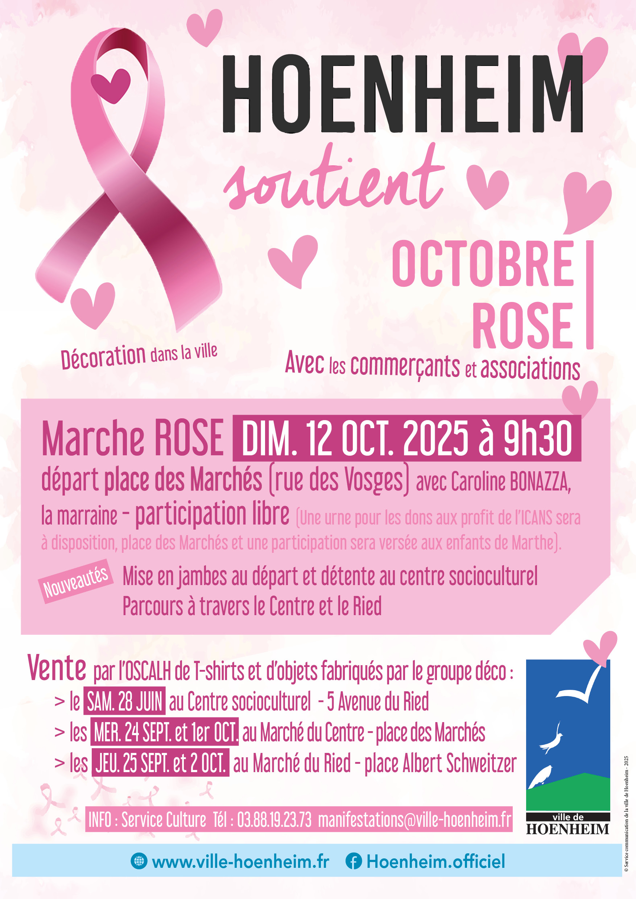

- Cet événement est terminé
Marche rose le 12 octobre 2025
12 octobre 2025 à 9 h 30 min - 12 h 00 min
Navigation de l'événement

A l’occasion d’Octobre rose la Ville de Hoenheim organise une marche rose à travers la ville.
Cette marche solidaire aura lieu le dimanche 12 octobre 2025 en présence de la marraine Caroline BONAZZA, hoenheimoise.
Rendez-vous à 9h30 sur la place des Marchés, rue des Vosges pour le départ.
La participation à cette marche est libre, une urne sera mise à disposition pour récolter les dons au profit de l’ICANS – chèque à l’ordre de l’ICANS. Une participation sera versée aux enfants de Marthe.
Nouveautés cette année :
- Mise en jambes au départ et détente au centre socioculturel
- Parcours à travers le Centre et le Ried
A la fin de la marche un moment convivial sera proposé place des Marchés, rue des Vosges grâce aux sponsors.
Toutes les associations sportives de la ville participeront activement à cette marche.
DÉCORATION DE LA VILLE
Tout le mois d’octobre plusieurs lieux à travers la ville de Hoenheim vont se parer de rose. Le groupe déco a préparé depuis des mois des décorations qui seront installées fin septembre.
A noter: une vente par l’OSCALH de T-shirt et d’objets fabriqués par le groupe déco aura lieu :
- le samedi 28 JUIN 2025 au Centre socioculturel – 5 Avenue du Ried
- les mercredis 24 SEPTEMBRE et 1er OCTOBRE au Marché du Centre – place des Marchés
- les jeudis 25 SEPTEMBRE et 2 OCTOBRE au Marché du Ried – place Albert Schweitzer
LES COMMERÇANTS SE MOBILISENT
La Ville de Hoenheim a également sollicité l’ensemble de ses commerçants pour soutenir cette cause. Ils proposeront des offres spéciales, un produit « octobre rose » ou des actions tout au long du mois d’octobre dont une partie du prix sera reversée à l’ICANS.
N’hésitez pas à vous rendre chez vos commerçants locaux pour faire une bonne action et les soutenir dans leur démarche.
Merci à : L’Agapanthe – Au Cheval Noir – La Pays’Anne – Boulangerie Flocon de Sucre – Au peigne fin – Super U Hoenheim – illiCO travaux Strasbourg – Adom Optic Hoenheim – Carrefour Express Hoenheim – Le Crédit Mutuel – Leclerc Schiltigheim – Le Centre socioculturel de Hoenheim